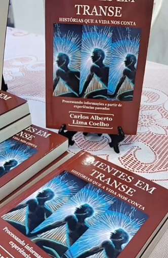

- Além da Liturgia - Textos Maçônicos
- A Luz da Verdade - Textos Maçônicos
- Luz! Mais Luz! - Subsídios para a história do rádio e da televisão no Maranhão
- Fala, Tigre! (Apontamentos para a história do jornalismo esportivo maranhense)
- Show de Rádio (Subsídios para a história da radiofonia maranhense)
- À Eterna Alexandria - Poesia Contemporânea Brasileira - (Shan Editores/RS) - Participação
- Cincadas - Nos Bastidores do Rádio e da TV - Brochura
- Dos Amores aos Tambores - Coletânea
- Novos Rumos - Série Internacional (Shan Editores/RS) - Participação
- Contos de Outubro - Antologia (Grupo Carranca) - Participação
- Nas Asas do Sonho - Poesias
- Amor e Lágrimas - Marcas do Tempo (Coletânea)
- Testemunha do Medo - Novela
- Um Novo Amanhecer - Crônicas e Poesias
- Rosas Vermelhas - Romance
- Verônica - Contos
- Em Busca da Liberdade - Romance
- Paralelo 38 - Crônicas e Poesias
- Conversa de Amigo ou Denúncia? Poesias
- Alma, coração e vida - Poesia
- Papéis Mofados - Crônicas e Poesias
- À Sombra das Acácias - Crônicas e Poesias
- Testemunha do Medo - Edição Nacional/Biblioteca 24x7-São Paulo
- Witness of Fear - Edição Internacional/Biblioteca 24x7-São Paulo
- O Comportamento do Maçon no Mundo Contemporâneo - Trabalho premiado no 1º Concurso Literário Lopes Bogéa/ Academia Maçônica Maranhense de Letras
